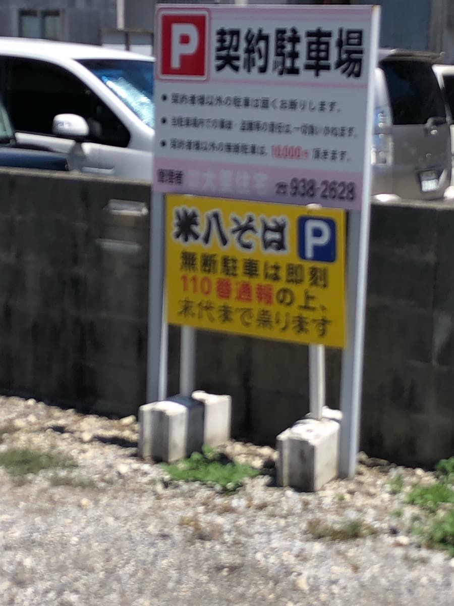
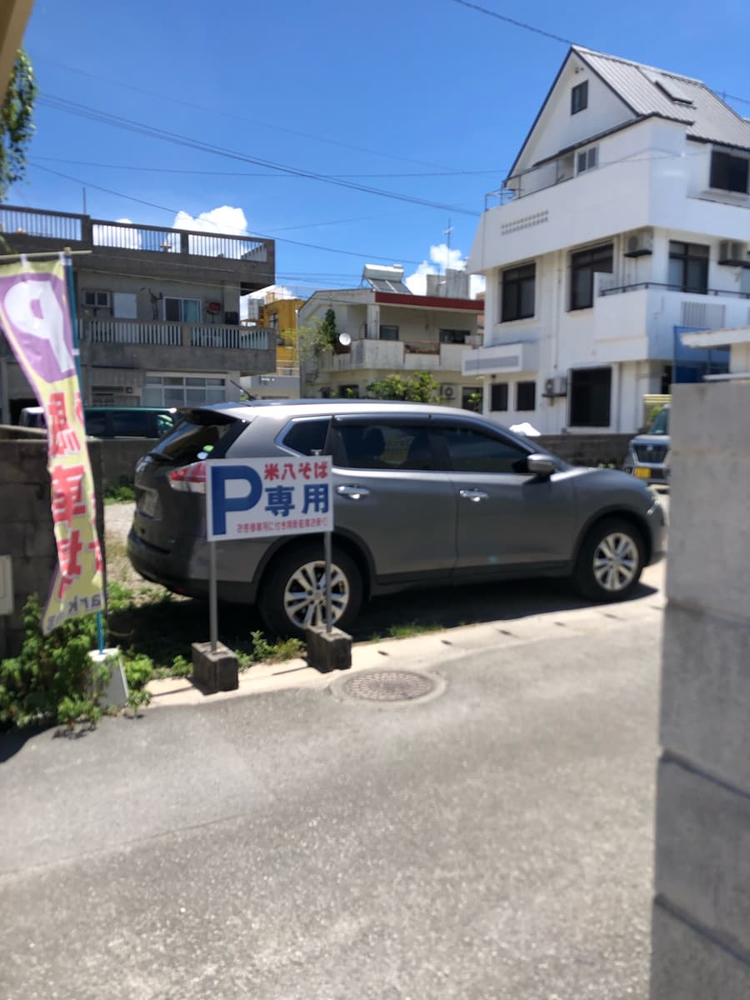
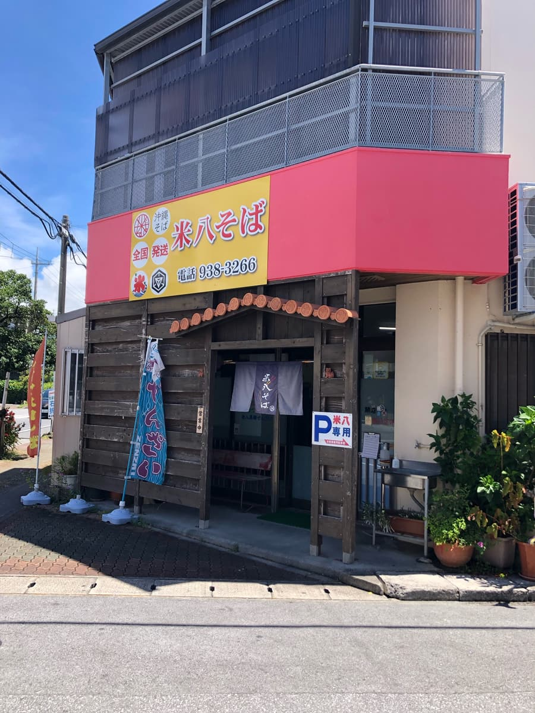
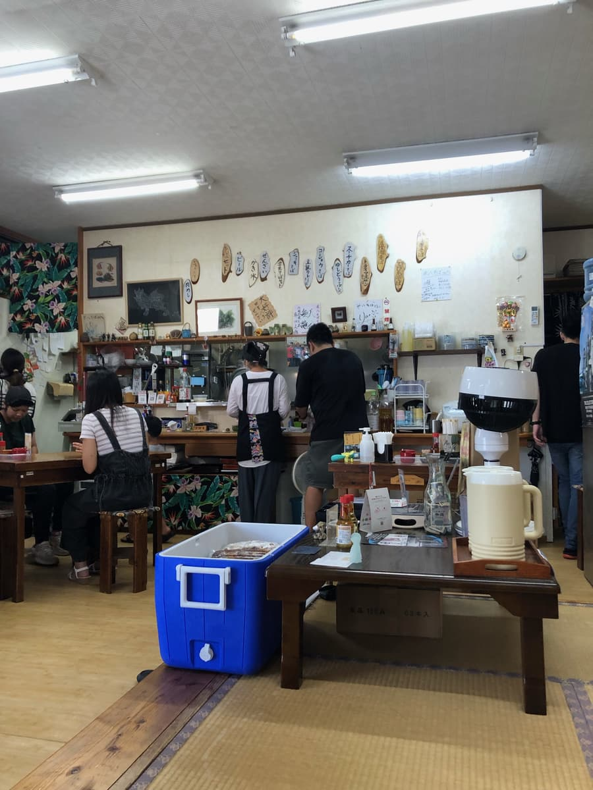
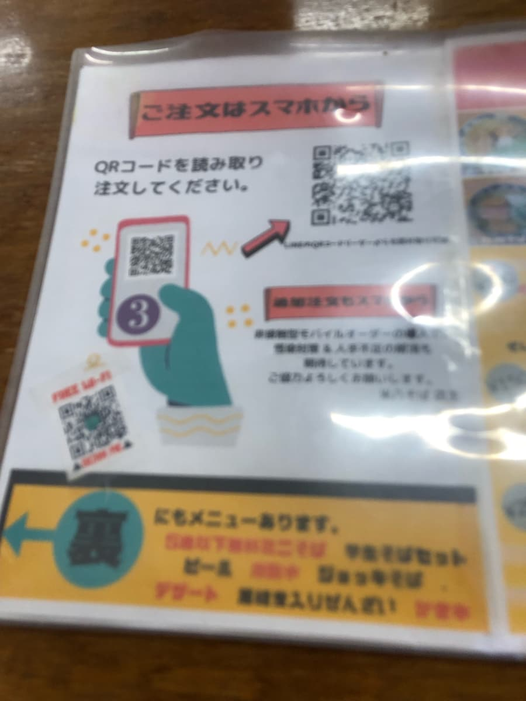
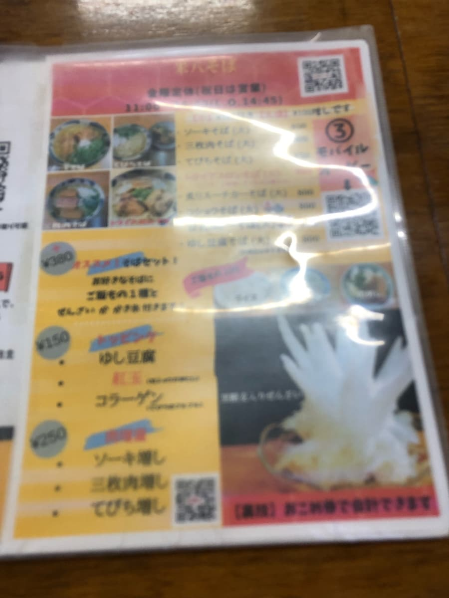
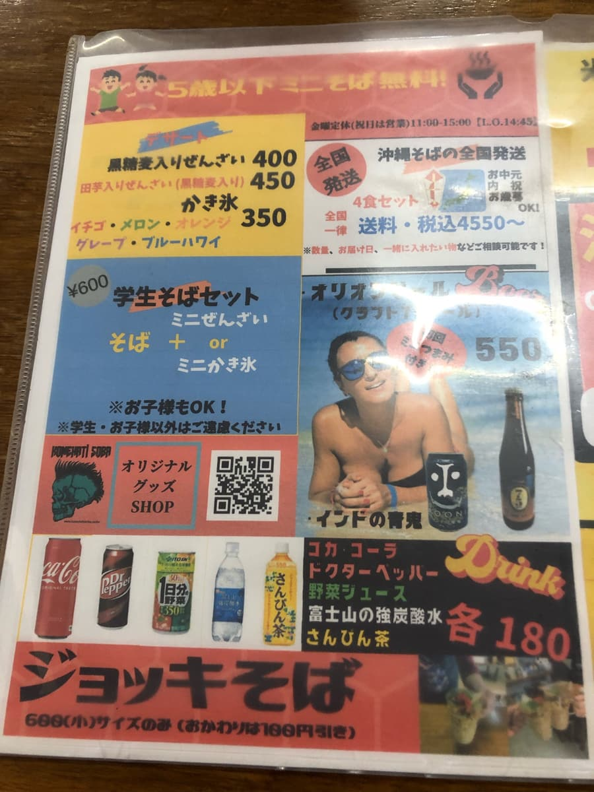
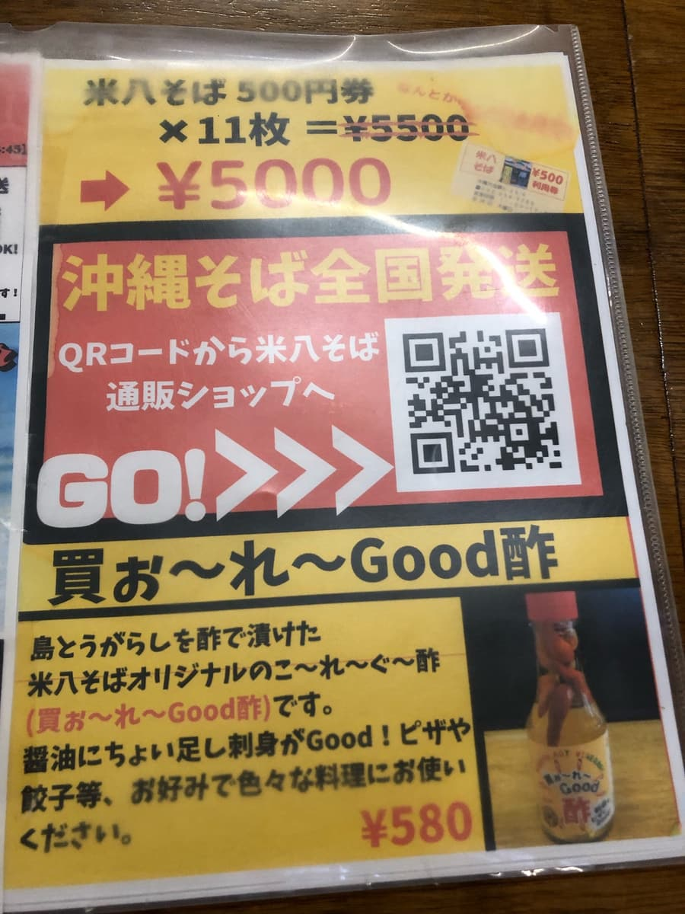
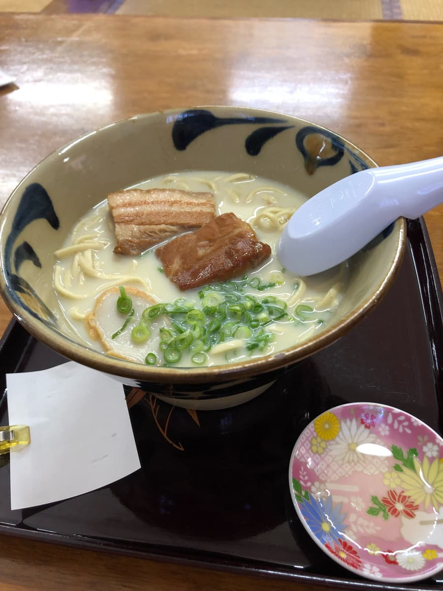
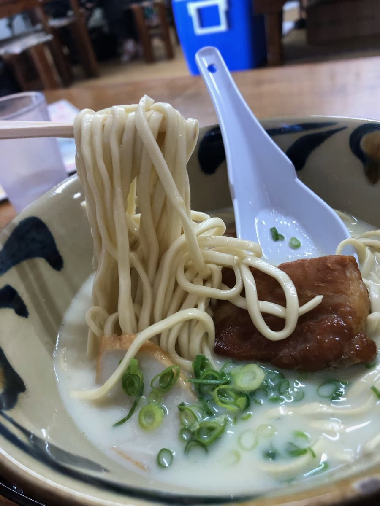

这篇文章是用AI（Chat GPT 4o）撰写，并由我部分补写😁
2024年7月去了冲绳市泡濑的「米八面」！

到店前一看，停车场里立着「米八面专用」的招牌，仔细看文字，写的是「擅自停车将立即报警110，并诅咒到子子孙孙」😆 感觉有点可怕呢😱ｗｗ


店面外观是以红色招牌吸睛的简单设计，让人感到有些温暖。
一进店内，是一片家常的气氛。竟然墙上有岸田首相和搞笑艺人镰鼬的签名！深深感受到不管是哪个名人都会光顾的人气店。而且我进去时，刚好是RBC电视节目的实景拍摄中。还没吃就已经让人期待值不断上升📈😄

坐下后看菜单，可以用QR Code。能用手机点餐真方便📱😁。
但是我的手机过热发烫，QR Code读取不了，结果还是向店员口头点餐(^0^;)




虽然菜单拍得失焦，但不知怎的被「豆浆咖哩面」吸引了，虽然是特别口味，还是决定点这个。

点的豆浆咖哩面端上来了。
开动。喝一口汤，和一般冲绳面的汤头不同，是绿咖哩的味道，豆浆让它变得温润绵滑，很好喝😋 和纯白的外观截然不同的味道呢。
这绝妙的平衡太棒了。

接着吃面。与细直面的冲绳面相性绝佳，汤头确实裹住面条，衬托出面条。这简直是冲绳面的新境界！感觉很新颖🌟
另外，在配料的肉上淋一点原创的岛辣椒醋，更能引出肉的鲜味。酸味和辣味的平衡刚刚好，一口就被俘虏了😆
环顾四周，店内挤满了当地人和观光客，可见其人气。我也完全开始想着下次来要试试一般的冲绳面了😋。
甜点也很丰富，菜单上还有黑糖红豆汤和加了芋头的红豆汤。这次豆浆咖哩面就吃饱了，留待下次的乐趣🍧。
对了对了，看菜单时很在意的「啤酒杯面」。这个我打算留到下次挑战。光听名字就让人兴奋的菜单，究竟会是什么味道呢，现在就开始期待了🎉。
就这样，这次造访「米八面」非常满足。能享受到冲绳面崭新一面的这家店，充满了让人想一去再去的魅力。也请大家一定要来体验这份美味。下次我会试试经典的冲绳面，期待新的发现。
评分（12分/15分）：这次点的是特别口味的菜单，我觉得水准很高，所以把它列入推荐店介绍😄 下次也想吃吃看一般的冲绳面。各位来到冲绳市时要不要来试试呢？
面：★★★★☆（4）
汤头：★★★★☆（4）
配料：★★★★☆（4）